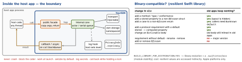

architecture · folio
In one line: An SDK is a guest with a contract: a small public surface that is hard
to misuse, documented threading (callbacks on a known queue), no crash, no
block, no launch cost, errors as values, and a compatibility promise — SemVer at the
source level, library evolution at the binary level — enforced by an API-diff check in CI.
Every public symbol is forever; shipping it is the easy part, removing it takes a major version.
Download PDF Print view LaTeX source


The surface
- One entry type, value-type configuration with safe defaults, required values in
init(not setters you can forget). Allow instances; asharedconvenience is optional — a forced singleton blocks tests and multi-account hosts. - Hard to misuse:
finalclasses (public, notopen), enums over flag combos, tagged IDs,some Preturns so the concrete type can change,internalby default. Kotlin: explicit API mode, nodataclasses in the public API (copy/constructor break on every new property). - Init: cheap, no I/O, no network; nothing in
+load/ static initialisers; no swizzling unless the host opts in. Start work lazily, after launch. - Threading: “callable from any thread” stated in the doc comment; state behind an
actor/ serial queue; public typesSendable; callbacks on a documented queue (main by default, or acallbackQueuelikeURLSession’sdelegateQueue); never call back synchronously inside the call. - Errors: one domain
enum(non-@frozen, so new cases are additive) + underlying error; invalid config →assertionFailurein debug, an error in release. Retries and backoff inside, bounded.
Example — a surface that is hard to misuse
public struct PayConfig: Sendable {
public let apiKey: String // required: in init
public var environment: Environment = .production
public var logLevel: LogLevel = .error // silent by default
public var callbackQueue: DispatchQueue = .main
public init(apiKey: String) { self.apiKey = apiKey }
}
public enum PayError: Error, Sendable { // NOT @frozen
case invalidRequest(String), declined(code: String)
case transport(underlying: any Error)
}
public final class PayClient: Sendable {
public init(config: PayConfig) // no I/O here
public func pay(_ r: PayRequest) async throws -> Receipt
public func pay(_ r: PayRequest, completion: @escaping @Sendable
(Result<Receipt, PayError>) -> Void) // on callbackQueue
@available(*, deprecated, renamed: "pay(_:)")
public func charge(_ r: PayRequest) async throws -> Receipt
}Versioning — the promise
- SemVer: patch = fix, minor = additive, major = anything a caller must change. Deprecate first (
@available(*, deprecated, renamed:); Kotlin@DeprecatedWARNING → ERROR → HIDDEN over several minors), remove at the next major. - API-diff in CI:
swift package diagnose-api-breaking-changes <tag>; Kotlin binary-compatibility-validatorapiDump/apiCheck(in the Kotlin Gradle plugin from 2.2.0); a committed public-API file makes every surface change a reviewed diff. - Support window: minimum OS, Xcode/Swift, Kotlin, RN versions written down; raising one is a major. Old SDK versions live in shipped apps for years.
- Fleet visibility: send the SDK version with every request (a header or User-Agent) — adoption per version, and the backend can disable a broken version remotely (kill switch) while hosts update.
Distribution
| SPM | source package, or .binaryTarget(url:checksum:) pointing at a zipped XCFramework |
| XCFramework | archive per destination (generic/platform=iOS, …iOS Simulator; Skip Install = No, Build Libraries for Distribution = Yes) → xcodebuild -create-xcframework; sign it |
| CocoaPods | trunk goes read-only on 2 Dec 2026 — existing builds keep working, no new versions; ship SPM |
| Android | AAR on Maven Central via the Central Publisher Portal (OSSRH ended 30 Jun 2025); ship consumer-rules.pro for R8 |
| npm / RN | "exports", react/react-native as peer deps, native code autolinked (or an Expo config plugin) |
Size, startup, privacy — the host pays
- Budget the SDK: measure the app-size and launch-time delta in a sample app per release. Few dependencies — a bundled copy of a popular library clashes with the host’s (duplicate classes / symbols); vendor + rename, or depend on nothing.
- Static XCFramework: no dyld cost; dynamic: one copy for app + extensions.
- Privacy manifest: the SDK ships its own
PrivacyInfo.xcprivacy(data collected, tracking domains, required-reason APIs). SDKs on Apple’s commonly-used list (Alamofire, Firebase*, SDWebImage…) need the manifest and a signature when shipped as binaries; Xcode checks a new version is signed by the same developer. - Logging: default silent or
Logger(subsystem: "com.example.sdk"); a host-settable level and handler; never tokens or PII.
Testing and docs
- Internal seams (
Transport,Clock,Storage) for your tests; ship a test double (PayClient.mock) so hosts can test their code. - A sample app in the repo = the integration test CI builds against the binary artifact (catches a missing
.swiftinterface, resource bundle or privacy manifest) on the minimum OS. - DocC / KDoc for every public symbol incl. threading and error behaviour; a migration guide per major.
Traps
- Library evolution “for safety” in a source-only package — it is for binaries built separately from clients; it costs indirection.
@frozenor@inlinableon day one — you can never add a stored property or change that body for old apps.- Typed
throws(PayError)is a promise too — the error type is now public API. - Callback on “whatever thread the network used” — host UI updates off-main.
- Doing work in
initor at launch “to be ready” — you just slowed every host.